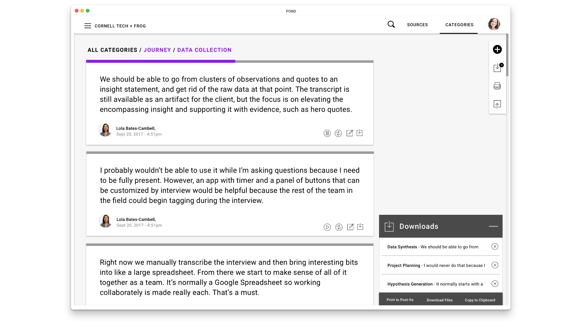
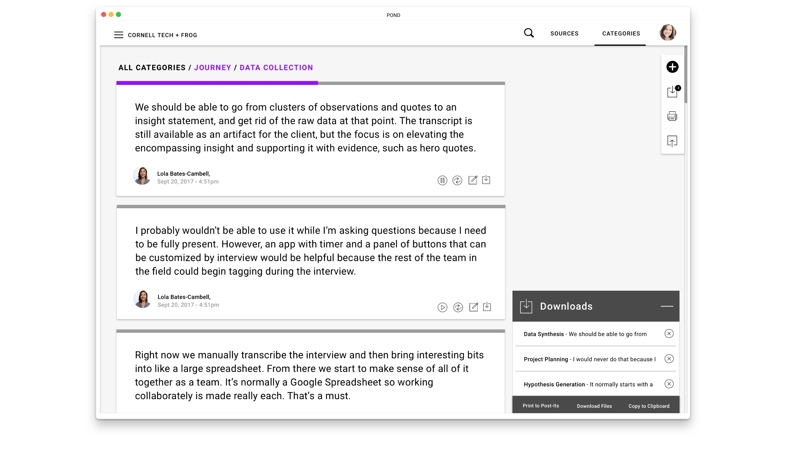

pond
PRODUCT DEVELOPMENT
A nifty tool for qualitative research,
pond helps design researchers focus on being creative by transcribing interviews and providing a flexible platform for collaborative synthesis.
Working with 3 graduate students from Cornell Tech, I dove into design research & product development while championing the UX/UI & front-end development.
As part of the company challenges in Product studio at Cornell Tech, frog asked, "How might we use sensors or wearables to enhance a design
researchers ability to draw more valuable insights while in the field?"
In 14 weeks, we went from knowing little about design research to developing a tool that
sparked interest from several VCs and design research leads at companies such as The Knot, WeWork, Artsy & IBM.
TRANSCRIPTION & LIVE TAGGING
To get started, the user creates a source and then starts the interview. As they speak, their conversation is transcribed. T
he design researcher can capture their raw insights live by simply clicking a button on the customizable 'tag' remote.

SPECIFIC AUDIO PLAYBACK
When they get back to the office, the interesting quotes are already separated from the irrelevant.
They can play back the audio and edit the transcription if there was an error.

SYNTHESIS
Acting as home for the data, pond allows users to move seamlessly between synthesising in the physical world and online.
The user can categorize the quotes with drag-and-drop on the interface or print them to post-it-notes so that there is space to spread out.
When they are finished grouping the insights, they can then bring the categorized groups back into pond by taking photos of the QR codes on the post-it notes.
SYNTHESIS
With all the quotes organized digitally, it is then simple to find specific quotes to use to convince the project stakeholders. It's easier for development teams to understand where you are coming from.
 

OPEN STUDIO
We were asked - out of 36 teams in the course - to represent Cornell Tech in front of the New York tech community at their annual Open Studio. We pitched our product and explained our journey in 4 minutes. I also created a poster about pond for the event.
There is currently an article being penned about us for the Cornell Tech website.


THE FUTURE?
Our mentor company frog has expressed interest in potentially testing our product this Spring.